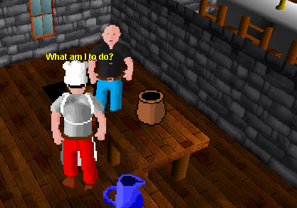
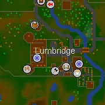

Cook's Assistant

The royal cook of Lumbridge is in quite a pinch! Stop by his kitchen at Lumbridge Castle to see if you can help him out.


Requirements
Levels
None.
Quests
None.
Items
1 Bucket of Milk
1 Pot of Flour
1 Egg
Note: these items may be obtained during the course of the quest.
Walkthrough

This quest can be started by speaking to the cook on the ground floor of the Lumbridge Castle. He will tell you that he is in dire need, as he must make the Duke of Lumbridge a birthday cake and he lacks the necessary ingredients.
The cook requires you get one bucket of milk, one pot of flour and one egg.
Step 1: Obtaining Flour
Take the empty pot on the table in the cook's kitchen. With it, travel north along the road until you find a wheat farm. Pick one wheat and walk a little further west to the nearby mill. Climb all the way up the ladders until you reach the hopper, which you must use the wheat on. Operate the levers and travel back down the ladders. From there, you can grab the freshly milled flower and scoop it into your pot.Step 2: Obtaining Milk
On your way back toward the castle, visit the general store just north of Lumbridge Castle. There, you can buy an empty bucket. Travel south to the crossroads at the castle and head east and follow the road north until you reach a dairy farm. Use the bucket on a cow to milk the cow.Step 3: Obtaining an Egg
Across the lane and a little north of the dairy farm is a chicken farm. An egg can usually be found there.Step 4: Bake the Cake
Once you have obtained the required items, you are able to return to the cook to give them to him.Congratulations! Quest complete!
Back
Home